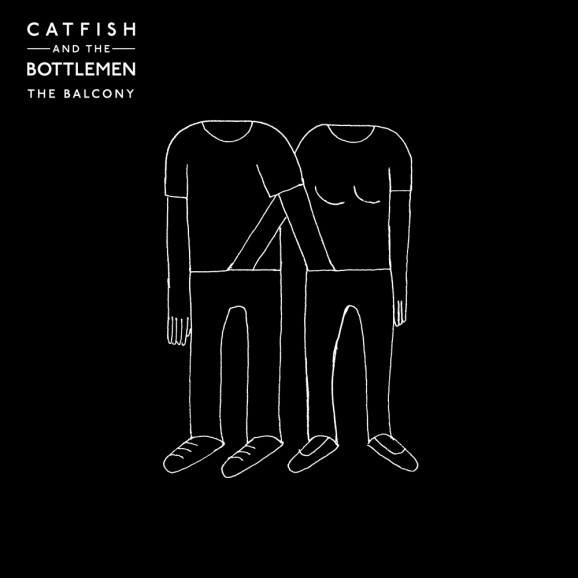
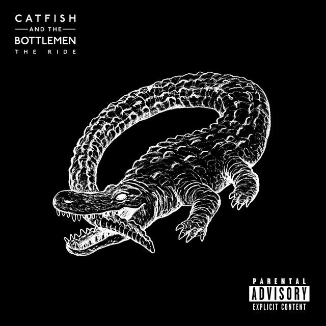

A blog dedicated to British stellar explosive band Catfish and the Bottlemen
British indie rock outfit Catfish & the Bottlemen formed in 2010 in Llandudno, Wales, with members moving to the seaside town from as far away as Sheffield and Newcastle to complete the lineup. Aussie-born singer/songwriter Van McCann initially started the band with guitarist Bill Bibby and bassist Benji Blakeway, eventually adding Bob Hall on drums. Pairing a staunch D.I.Y. ethic with a gritty, garage-laced sound, the Bottlemen gigged constantly throughout 2012 and 2013 before signing to Mumford & Sons bandmember Ben Lovett's Communion Records later that year. They released three singles on Communion before moving to Universal in 2014. After receiving a Best Newcomer Award from the BBC, they delivered their full-length debut, The Balcony, in September 2014. The album debuted at number ten on the U.K. charts, yielding the hit single "Kathleen." Continuing to manage their heavy tour schedule, Catfish & the Bottlemen also spent part of 2015 in Los Angeles working on their follow-up album. A BRIT Award nomination in early 2016 coincided with the release of "Soundcheck," the first single from from their sophomore LP. The Ride, which appeared that May.
Source: http://www.billboard.com/artist/6229493/catfish-and-the-bottlemen/biography
CATB's 1st Studio Album
CATB's 2nd Studio Album
I don’t know where to begin, where should I start sharing the tale on how I became an obsessed teen. Perhaps, saying obsessed would be an understatement and I wouldnt want to begin this rant-about-my-fetish-on-a-british-infamous-band on a reserved note. I will be as blunt as possible, ummasking everything I feel and please, as I do so, please bear with me for a little while. In about 5 minutes or so, let me make you as my conduit to express everything I’ve been longing to share. Would there be any word greater word than obsessed, please inform me right away without hesitation. Gladly, I’ll accept that adjective as a word to describe myself, and gladly, I will thank you for giving me the word I’ve been searching for months to define what I really am. We all have obsessions, I guess? But mine’s no different breed. I’ve met different acquaintances, who just like me, are fetishing bands- from their songs to their band members. I’ve encountered several rock and alternative indie bands, favored some and fangirled over them for a short period of time. Last 2015, I started listening to heavy metal bands such as Slipknot, Bring Me The Horizon, Issues, and the like. After a long time of being a HUGE HUGE fan of them, to a point of memorizing their discographies, band members, and song lyrics, I’ve pondered that maybe I should venture out a little more. Maybe I should take a halt on listening to real heavy stuff, and slow things down a little bit to give some therapy to my ears. After months of searching and coming across lots of potential bands, I can finally say that I could rest from this tedious endeavour. Last year, I found this band named Catfish and the Bottlemen. And yes, not a single trace of thought occured to me that I would devote my soul and sanity to it as I am right now. No other band I’ve encountered so far, is comparable to this stellar British rock band I’m devoted to. Their undeniable charm is beyond the margin of other bands I’ve listened. To give you a headstart, Catfish and the Bottlemen is a British rock band from Llandudno, North Wales, United Kingdom. They’re not the big band as you think, but in contradiction, they have a big appeal to the masses. Composed of four band members namely Van Mccann, Johnny Bond, Benji Blakeway and Bob “Sideshow Bob” Hall, these lads draw thousands of fans all over the world, making their fanbase as strong as ever. Their songs tend to be written not to top the charts, but to hit home and dig out the inner psychedelic of the people. So why choose Catfish and the Bottlemen? Honestly, I really don’t know why. If I were to trace the precursor on why I chose this infamous small band over other successful and stellar ones, I wouldn’t know where’d the trace would come to a stop. Factors that would prevail are: number one, their members are REALLY good looking and never fail to make their fans blush.Number two, their catchy songs are rendered unforgettable and as to my case, no matter how many times I play their songs in a day, I never get bored. And lastly, as for their stage presence during concerts, wow I’m speechless. It is evident that they love what they are doing, with enkindled passion to make their fans happy. Just this week, I bought two Catfish and the Bottlemen shirts, and I reckon, it was my first time, in a long time, to spend something pricey for myself. I couldn’t help but be in tears after I was handed out the two t-shirts, and that was the time I came to thinking that I officially am in love. That this feeling isn’t shallow anymore, and it is beyond the depths of listening to their songs on a day to day basis and ranting over them. It is so much more than that. Cheezy, right? I’ve tried watching a video of Van Mccann talking an hour straight instead of studying for an exam the next day. No regrets, anyways. I’ve tried watching almost all of their full concert videos and no matter how many times they repeat their setlist in every video, it just feels so new and different every time. We all have obsessions, perhaps. We just have to find it within ourselves. Turn these obsessions to motivate you, to inspire you, and to make you better. And I thank Catfish and the Bottlemen for their existence, for healing me in every rubble I encounter, and for making me love so deeply as I’ve never been before Van, Bondy, Benji, Bob, see you the soonest…
Want to be a part of the Catfish and the Bottlemen family? Send a message